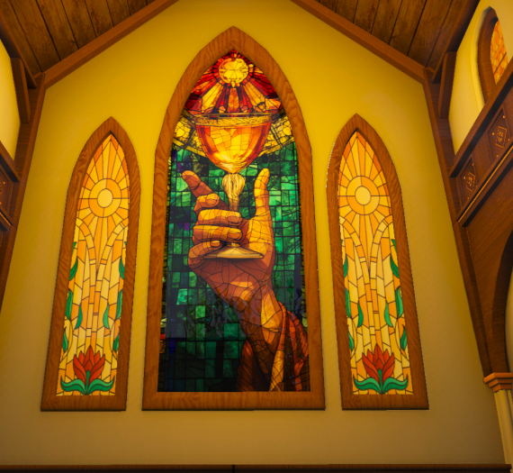
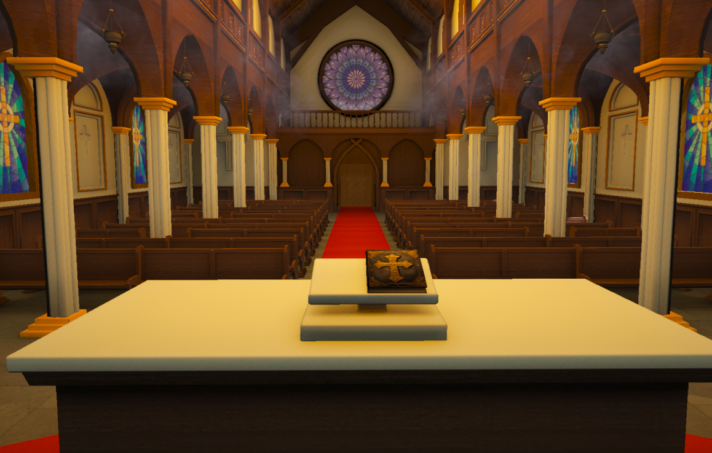
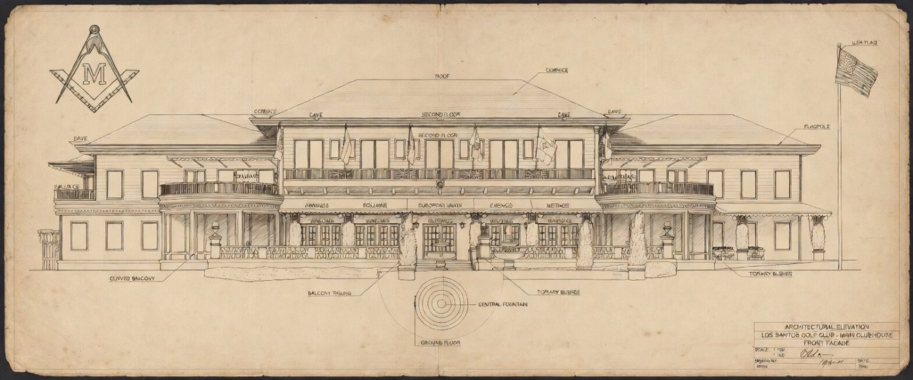

EXPEDIENTE: SANC-TUM
// MÁS ALLÁ DE LA FE, LO MORALMENTE INCORRECTO //
Bajo techos elevados donde el eco de los pasos se diluye entre columnas antiguas y vitrales que tiñen la luz con tonos suaves, un espacio tradicionalmente vinculado a la fe y al recogimiento ha quedado en el centro de una inesperada controversia. Lo que durante generaciones ha sido símbolo de calma espiritual y encuentro interior, hoy despierta interrogantes difíciles de ignorar.


En los últimos días, diversas fuentes de la red WZN han comenzado a señalar movimientos inusuales en este enclave, describiendo situaciones que se alejan de la normalidad esperada en un lugar de estas características. Testimonios coincidentes apuntan a la presencia de pequeños grupos que actúan con discreción, despertando sospechas por la naturaleza poco clara de sus actividades.
Fuentes cercanas aseguran que, durante estas visitas aparentemente discretas, se han hallado documentos antiguos cuidadosamente resguardados en el propio altar. Dichos escritos contienen referencias a encuentros periódicos, narraciones de carácter inquietante y descripciones que algunos califican como "perturbadoras".
En estos textos se mezclan símbolos, rituales y fragmentos de relatos difíciles de interpretar, incluyendo menciones a reuniones privadas entre figuras influyentes y jóvenes invitadas bajo pretextos poco claros, en contextos alejados de cualquier actividad pública o transparente.
Se trata de un sistema interno de registro cuya finalidad exacta aún no ha podido ser esclarecida, pero recuerda peligrosamente a redes de tráfico humano destapadas en la Deep Web. Aunque no existe confirmación oficial, ciertos pasajes sugieren conexiones indirectas con estructuras de poder, mencionadas de forma ambigua pero insistente.
No menos llamativo resulta el hecho de que varios testimonios coinciden en señalar que, fuera de este entorno histórico, los mismos individuos se congregan en un amplio recinto al aire libre, caracterizado por su exclusividad, extensas áreas verdes perfectamente cuidadas y una clientela asociada tradicionalmente a círculos de alto poder adquisitivo.

Este lugar, rodeado de discreción y acceso limitado, podría servir como punto de encuentro complementario para las operaciones de la logia y las reuniones descritas en el tomo sagrado.
Por el momento, las autoridades y la LSPD no han emitido declaraciones al respecto. Sin embargo, el creciente interés en torno a estas actividades plantea interrogantes aterradores sobre lo que realmente ocurre tras puertas que, a simple vista, parecen abiertas a todos, pero que esconden el destino de "Pizza", "Taco" y decenas más en la oscuridad.